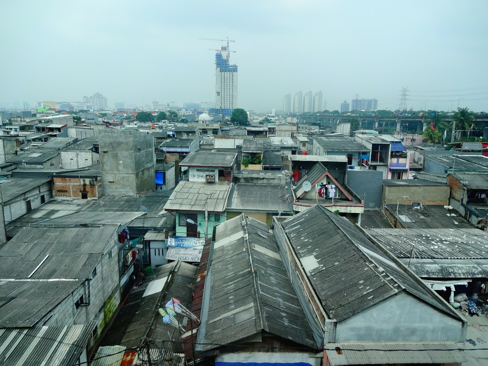

L’Indonésie est, de façon générale, une destination assez sûre. Quelques rabatteurs peuvent vous harceler, mais la plupart des étrangers affrontent plus de problèmes chez eux. Si le vol existe, il est peu fréquent.

Alcool frelaté : Hormis dans les bars et les resorts fiables, abstenezvous de consommer de l’arak, l’alcool local à base de riz ou de palme. Il peut contenir du méthanol, toxique, produit lors de la fermentation, et qui n’est pas toujours éliminé. Décès ou empoisonnements peuvent survenir, notamment à Bali et aux îles Gili, lorsque des vendeurs peu scrupuleux mettent de l’arak à la place de vodka, de gin ou de whisky. Si les prix pratiqués dans un bar sont très bas, prenez le temps de vous demander ce que vous buvez vraiment… Drogue: L’Indonésie pratique la tolérance zéro en matière de drogue, et les cas d’arrestation et de condamnation sont nombreux. Ces dernières années, des Français ont été arrêtés et condamnés par des tribunaux indonésiens. Le trafic de drogue fait l’objet de condamnations très lourdes, allant jusqu’à la peine de mort.